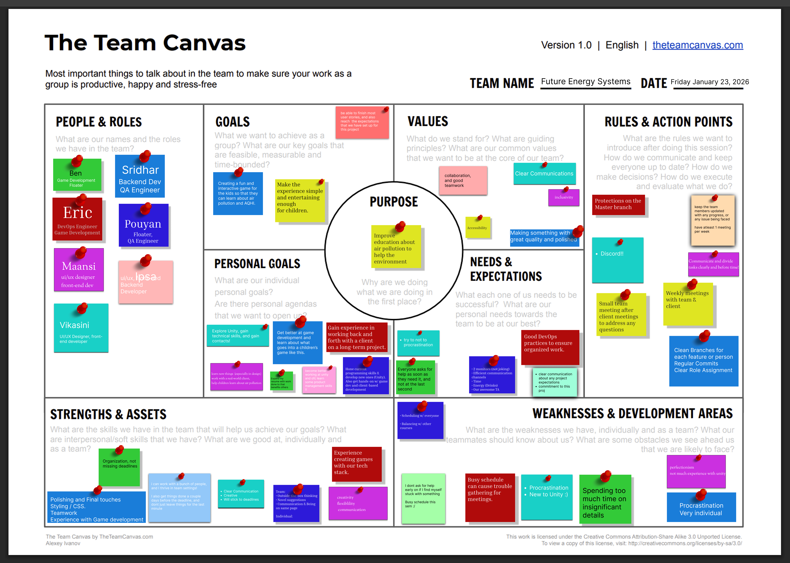

Teamwork
Team Canvas

Belbin Roles
| Name | Preferred | Manageable | Least Preferered |
|---|---|---|---|
| Eric Cope | IMP, ME, CF | SH, PL, TW | SP, CO, RI |
| Ben Bingham | CF, SP, IMP | SH, PL, TW | CO, ME, RI |
| Sridhar Saravanakumar | TW, PL, IMP | SP, ME, RI | CF, CO, SH |
| Vikasini Senthilkumar | SP, IMP, PL | ME, CO, CF | SH, TW, RI |
| Pouyan Razmi-Nia | TW, IMP, CF | SP, CO, PL | ME, RI, SH |
| Maansi Sharma | PL, SP, TW | CF, CO, ME | RI, IMP, SH |
| Ipsa Manhas | TW, RI, SP | IMP, CF, ME | CO, PL, SH |
Scrum Roles
| Sprint | Scrum Master | Product Owner |
|---|---|---|
| Sprint 1 | Sridhar Saravanakumar | Ben Bingham |
| Sprint 2 | Sridhar Saravanakumar | Vikasini Senthilkumar |
| Sprint 3 | Eric Cope | Vikasini Senthilkumar |
| Sprint 4 | Ben Bingham | Ipsa Manhas |
| Sprint 5 | Vikasini Senthilkumar | Sridhar Saravanakumar |
Thinking Roles
PL (Plant)
Creative, spends their time solving problems
- Maansi Sharma (Preferred)
- Sridhar Saravanakumar (Preferred)
- Vikasini Senthilkumar (Preferred)
ME (Monitor Evaluator)
Strategically considers all options
- Eric Cope (Preferred)
- Sridhar Saravanakumar (Manageable)
- Vikasini Senthilkumar (Manageable)
- Maansi Sharma (Manageable)
- Ipsa Manhas (Manageable)
SP (Specialist)
An expert in a small number of areas
- Vikasini Senthilkumar (Preferred)
- Maansi Sharma (Preferred)
- Ben Bingham (Preferred)
- Ipsa Manhas (Preferred)
Action Roles
SH (Shaper)
Problem solver
- Eric Cope (Manageable)
- Ben Bingham (Manageable)
IMP (Implementer)
Turns plans into concrete output
- Eric Cope (Preferred)
- Vikasini Senthilkumar (Preferred)
- Pouyan Razmi-Nia (Preferred)
- Sridhar Saravanakumar (Preferred)
- Ben Bingham (Preferred)
CF (Completer Finisher)
Polishes and finds errors
- Ben Bingham (Preferred)
- Eric Cope (Preferred)
- Pouyan Razmi-Nia (Preferred)
People Roles
RI (Resource Investigator)
Enthusiastic and communicative
- Ipsa Manhas (Preferred)
- Sridhar Saravanakumar (Manageable)
TW (Teamworker)
Listens and helps teams stay cohesive
- Sridhar Saravanakumar (Preferred)
- Pouyan Razmi-Nia (Preferred)
- Ipsa Manhas (Preferred)
- Maansi Sharma (Preferred)
CO (Coordinator)
Great delegator
- Vikasini Senthilkumar (Manageable)
- Pouyan Razmi-Nia (Manageable)
- Maansi Sharma (Manageable)